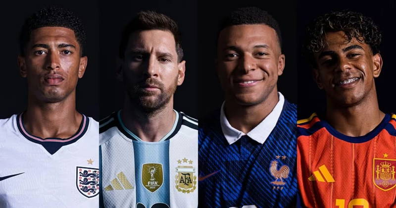

Quartas de final terminam e semifinais da Copa do mundo estão definidas.

Quartas de final terminam e semifinais da Copa do mundo estão definidas.
Os jogos das quartas de final aconteceram nesta última semana e definiram os quatro semifinalistas da Copa do Mundo de 2026.
França x Marrocos
Na reedição da semifinal da última Copa do Mundo, a França chegou embalada após uma vitória magra sobre o Paraguai, mas demonstrando um futebol de outro nível. Já Marrocos tinha uma missão difícil, porém possível: segurar o poderoso ataque francês e suas estrelas.
Foi um jogo intenso, com direito a pênalti defendido de Kylian Mbappé e uma defesa marroquina muito sólida, apostando nos contra-ataques. No entanto, a resistência acabou aos 60 minutos, quando Mbappé abriu o placar com um golaço. Apenas seis minutos depois, Ousmane Dembélé fez grande jogada individual e ampliou para 2 a 0.
A França foi superior durante toda a partida e poderia até ter construído um placar mais elástico. No fim, vitória por 2 a 0 e vaga garantida nas semifinais.
Espanha x Bélgica
Em opinião particular, esse era o confronto mais equilibrado das quartas de final. A Bélgica vinha de uma goleada por 4 a 1 sobre os Estados Unidos, enquanto a Espanha havia eliminado a esperançosa seleção portuguesa de Cristiano Ronaldo. Ainda assim, nenhuma das duas equipes apresentava um futebol que permitisse apontar um favorito.
A partida foi bastante equilibrada. Aos 30 minutos, Fabián Ruiz abriu o placar para a Espanha. Aos 41, Charles De Ketelaere deixou tudo igual para a Bélgica.
Os dois times criaram boas oportunidades, mas a maior polêmica da partida foi a substituição do goleiro Thibaut Courtois, do Real Madrid, ainda no segundo tempo. Quando tudo indicava que o jogo caminharia para a prorrogação, aos 88 minutos, Mikel Merino aproveitou uma falha do goleiro belga e marcou o gol da vitória espanhola.
Foi uma classificação emocionante para a Espanha, que agora está entre as quatro melhores seleções da Copa.
Noruega x Inglaterra
O confronto reuniu duas seleções que poderiam tranquilamente chegar à final. De um lado, a Inglaterra, que, apesar de não encantar com seu futebol, conta com estrelas decisivas. Do outro, a surpreendente Noruega, que eliminou o Brasil e chegou às quartas de forma inesperada.
A seleção norueguesa começou melhor e abriu o placar aos 36 minutos com Schjelderup. Pouco depois, teve a chance de ampliar, mas Sørloth desperdiçou uma grande oportunidade após tentar uma jogada individual, impedindo o possível oitavo gol de Haaland nesta Copa.
E o velho ditado do futebol voltou a aparecer: quem não faz, leva. Nos acréscimos do primeiro tempo, Jude Bellingham empatou a partida e devolveu a esperança aos ingleses. Na etapa final, novamente ele apareceu. Aproveitando o rebote do goleiro, ´'Bellingol' marcou o segundo gol e virou o jogo para a Inglaterra.
Fim de partida: Inglaterra 2 a 1, classificação garantida e mais uma atuação decisiva de Bellingham.
Argentina x Suíça
A Argentina chegou às quartas de final como favorita, mesmo após as polêmicas das fases anteriores. Com um elenco repleto de talentos, a expectativa era de uma vaga garantida nas semifinais.
Aos 10 minutos, após cobrança de escanteio de Lionel Messi, Mac Allister subiu mais alto que a defesa e abriu o placar. Depois disso, o jogo perdeu intensidade até o início do segundo tempo.
Aos 67 minutos, Ndoye empatou para a Suíça após uma bela jogada coletiva. O gol acordou a Argentina, que passou a pressionar. Messi tentou decidir a partida, mas acabou pecando nas finalizações e nas últimas escolhas. Cinco minutos após o gol, Embolo foi expulso após receber o segundo cartão amarelo por simulação. Mesmo com um jogador a menos, a Suíça resistiu e levou a decisão para a prorrogação.
Na segunda etapa do tempo extra, Flaco López devolveu a bola para Julián Álvarez, o atacante acertou um chute espetacular e recolocou a Argentina em vantagem. Já nos minutos finais, Lautaro Martínez marcou o terceiro gol e decretou a vitória por 3 a 1.
A seleção argentina está nas semifinais. Apesar das discussões em torno da arbitragem, a expulsão de Embolo foi corretamente aplicada pelas regras do jogo. Agora, resta torcer para que o mesmo critério seja mantido em lances semelhantes.
Semifinais
As semifinais estão definidas: de um lado da chave teremos França x Espanha, um grande clássico europeu. O duelo ganha ainda mais destaque pela ascensão de Kylian Mbappé e pela rivalidade que a mídia vem apontando com Lamine Yamal. Embora o jovem espanhol ainda não tenha feito um jogo brilhante, terá uma grande oportunidade para mostrar seu valor. A partida será disputada na terça-feira, dia 14 de julho, às 16h.
Do outro lado, Inglaterra e Argentina fazem um confronto entre duas seleções que demonstraram muita resiliência ao longo do torneio. Ambas lutam até o último minuto e prometem entregar mais um grande espetáculo, com grandes estrelas de ambos os lados. O jogo acontece na quarta-feira, dia 15 de julho, também às 16h.
Na minha opinião, não há favoritos claros para essas semifinais. O equilíbrio é enorme, e tudo indica que teremos dois grandes jogos antes de uma final que promete entrar para a história.
Feito por: G.abbsp